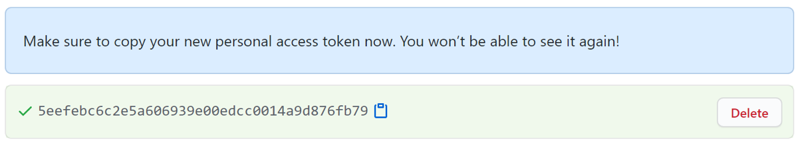

Auto-generated tagged releases and release notes from GitHub issues
Overview
nbdev.release provides 3 commands that you can run from your shell:
nbdev_changelog: creates a CHANGELOG.md file from closed and labeled GitHub issues
nbdev_release_git: tags and creates a release in GitHub for the current version
nbdev_release_gh: calls nbdev_changelog, lets you edit the result, then pushes to git and calls nbdev_release_git
Here’s a brief demonstration of how to use the tools in nbdev.release. This demo first creates an issue using the gh command line tool, and then closes it using git; you can also use GitHub’s web interface for both of these tasks. (Note that this functionality used to be in a project called fastrelease, so in the video the command line tools have different names, starting with fastrelease_ instead of nbdev_).
Setup
First, create a settings.ini file with the following contents (replacing the values as described below):
[DEFAULT]
lib_name = fastrelease
user = fastai
version = 0.0.1
Set lib_name to the name of GitHub repo, user to the owner of that repo, and version to the version number of your library. (Note that if you use nbdev then you’ll already have this information, so you don’t need to do anything further to set it up.)
You’ll need to get a GitHub personal access token if you haven’t already. To do so, click here and enter “fastrelease” in the “Note” section, and click the repo checkbox.
Then click “Generate Token” at the bottom of the screen, and copy the token (the long string of letters and numbers shown). You can easily do that by clicking the little clipboard icon next to the token.

Paste that token into a file called token into the root of your repo. You can run the following in your terminal (cd to the root of your repo first) to create that file:
echo XXX > token
Replace XXX above with the token you copied. Also, ensure that this file isn’t added to git, by running this in your terminal:
echo token >> .gitignore
Creating release notes
Now you’re ready to create your release notes. These are created in a file called CHANGELOG.md. Here’s an example of what it creates: nbdev CHANGELOG.
All issues with the label bug, enhancement, or breaking that have been closed in your repo since your last release will be added to the top of this file. If you haven’t made any releases before, then all issues with those labels will be included.
Therefore, before you create or update CHANGELOG.md, go to your GitHub issues page, remove is:open from the filter, and label any issues you want included with one of the labels above. When you’ve done that, you can create or update your release notes by running in your terminal:
nbdev_changelog
The titles and bodies of each issue will be added. Open CHANGELOG.md in your editor and make any edits that you want, and then commit the file to your repo (remember to git add it!)
Tagging a release
You should now tag a release. This will create a tag in GitHub with your current version number in settings.ini, and will then make it into a release, using your latest release notes as the description of the release:
nbdev_release_git
After you run this, be sure to increment your version number in settings.ini. You can either edit it manually, or if you use nbdev it can be done for you by running:
nbdev_bump_version
Doing both (creating release notes, and tagging a release)
To complete both of the steps above, run:
nbdev_release_gh
See the screencast above for a demonstration of this.
To create a markdown changelog, first create a Release object, optionally passing a mapping from GitHub labels to markdown titles. Put your github token in a file named token at the root of your repo. Release attempts to fetch values for arguments from the following locations if not supplied:
owner: fetched from the field user in settings.ini. This is the owner name of the repository on GitHub. For example for the repo fastai/fastcore the owner would be fastai.
repo: fetched from the field lib_name in settings.ini. This is the name of the repository on GitHub. For example for the repo fastai/fastcore the owner would be fastcore.
token: fetched from a file named token at the root of your repo. Creating a token is discussed in the setup section.
groups: (optional) fetched from the field label_groups in settings.ini, which is a JSON string. This is a mapping from label names to titles in your release notes. If not specified, this defaults to:
Create the CHANGELOG.md file, or return the proposed text if debug is True
Type
Default
Details
debug
bool
False
Just print the latest changes, instead of updating file
rel = Release()print(rel.changelog(debug=True))
## 2.1.1
### Bugs Squashed
- fix `nbdev_test` with no `--fname` in non-nbdev repos ([#730](https://github.com/fastai/nbdev/pull/730)), thanks to [@seeM](https://github.com/seeM)
- Auto-generated showdoc headers not in ToC ([#703](https://github.com/fastai/nbdev/issues/703))
- Should have been fixed in Quarto here:
https://github.com/quarto-dev/quarto-cli/commit/dbb9de99a1ad959d1d6e064654002a8247138289
Check whether `#| output: asis` fixes it.
Release.release
Release.release ()
Tag and create a release in GitHub for the current version
This uses the version information from your settings.ini.
Release.latest_notes
Release.latest_notes ()
Latest CHANGELOG entry
All relevant pull requests and issues are fetched from the GitHub API, and are categorized according to a user-supplied mapping from labels to markdown headings.